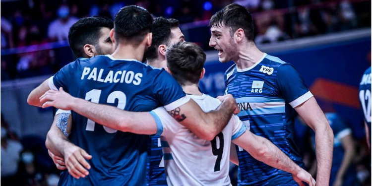
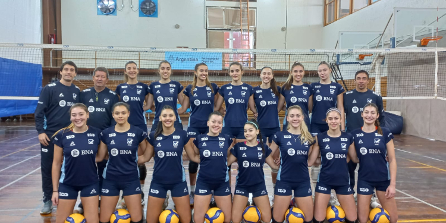

La Selección Mayor masculina tiene su lista de jugadores para la VNL 2023
La Selección Mayor masculina está a días del comienzo de un nuevo año de competencia con importantes compromisos ya que disputará la VNL, el Sudamericano, Preolímpico y los Juegos Panamericanos en Chile.
Marcelo Méndez, que este año tendrá como asistentes a Martín López y Pablo Rico, dispuso una lista de 24 jugadores para la VNL que comenzará en junio próximo.
La Selección Argentina jugará los partidos ante Cuba en Tecnópolis el 1 y 2 de junio próximo y luego viajará a Canadá, país donde disputará el primer weekend de VNL. Luego partirá rumbo a Francia y Estados Unidos para la fase inicial de dicho torneo.
Lista Selección Argentina – VNL 2023 Armadores: Luciano De Cecco Matías Sánchez Matías Giraudo Luciano Aloisi Federico Arquez Opuestos: Bruno Lima Pablo Koukartsev Manuel Balagué Centrales: Agustín Loser Joaquín Gallego Martín Ramos Sergio Soria Nicolás Zerba Ramsés Cascu Puntas: Ezequiel Palacios Jan Martínez Luciano Vicentin Nicolás Méndez Valentino Vidoni Manuel Armoa Mauro Zelayeta Luciano Palonsky Líberos: Santiago Danani Tobías Scarpa
Las Panteritas U19
Las Panteritas están en un 2023 de Mundiales y la Selección U19 femenina cumplió otra etapa de preparación hacia el Campeonato del Mundo en Hungría y Croacia en el Centro Nacional de Alto Rendimiento Deportivo. El equipo dirigido por Javier González y que tiene a Federico Bonvissuto como asistente trabajó durante el 11 y 19 de abril pasado con 15 jugadores para ir observando y delineando el plantel que jugará el Mundial entre el 1 y 11 de agosto próximo. Las chicas trabajaron en turno simple y doble, con trabajo de pelotas y gimnasio.
